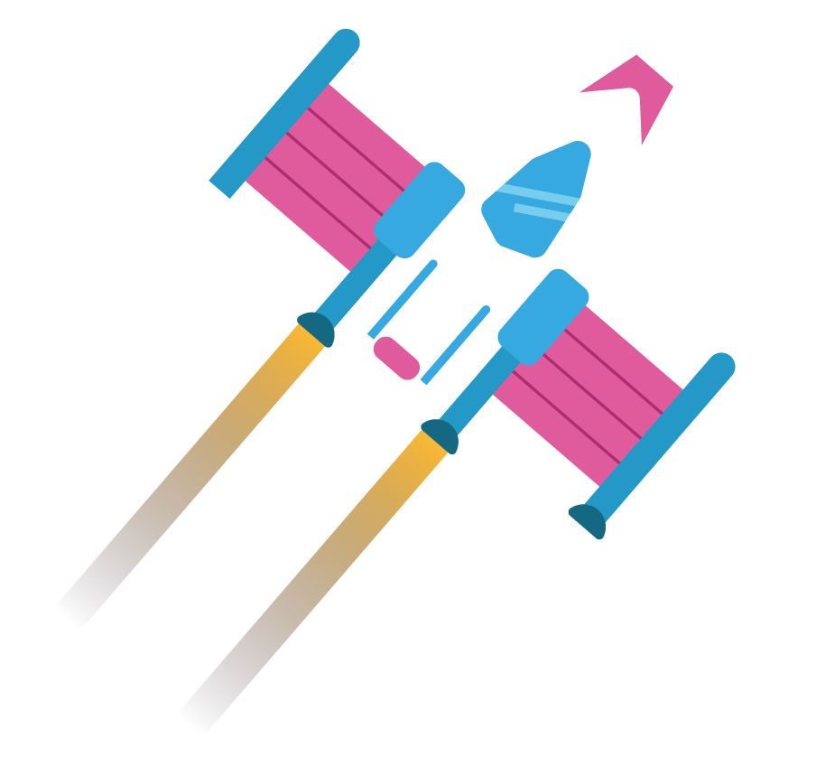

Hi! If you want to join our Dojo, please
get in touch
.
CarrickDojo
Projects
Ninjas
Mentors
Resources
About Our Dojo
Get in Touch
× Close
Home
Projects
Ninjas
Mentors
Resources
About Our Dojo
Get in Touch
404: PAGE NOT FOUND
You appear lost.
Would you like to go home?
